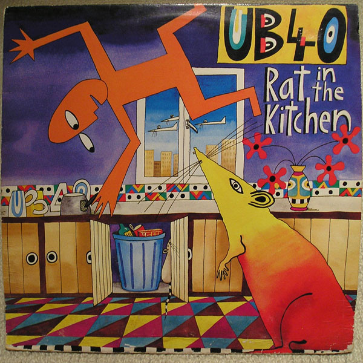

LP
Rat In The Kitchen
UB40
Media: — · Sleeve: —
—
Personal
Discogs SuggestedCA$9.78
Discogs MedianCA$9.78
Discogs HighCA$9.78
- Physical Copy ID
- BB-LP-334
- Year
- 1986
- Label
- DEP International, DEP International
- Catalog #
- LPDEP 11, LP DEP 11
- Country
- NZNew Zealand
- Genre / Style
- Electronic, Reggae · Dub, Synth-pop, Reggae-Pop